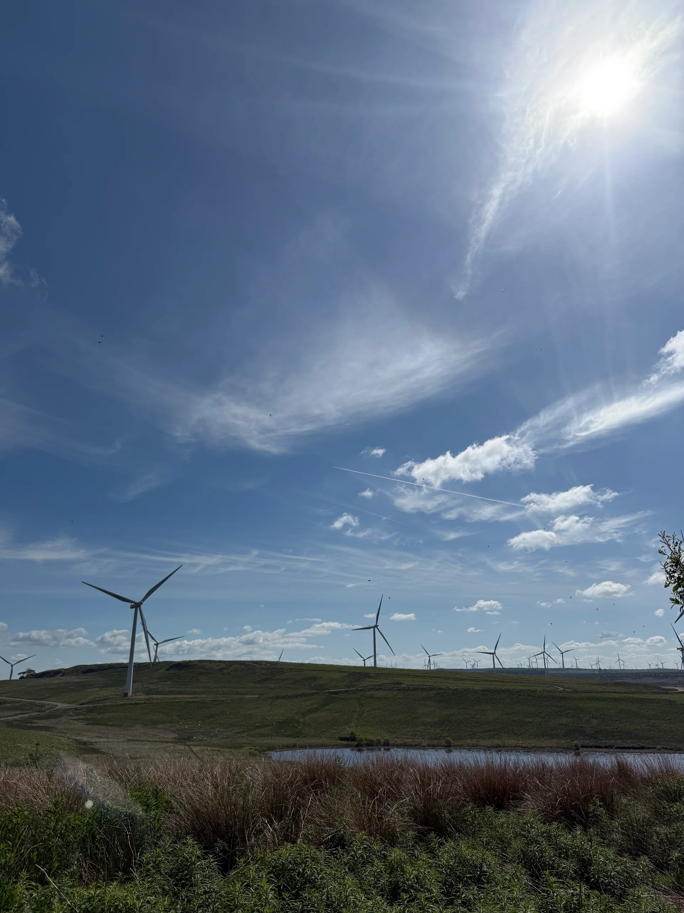
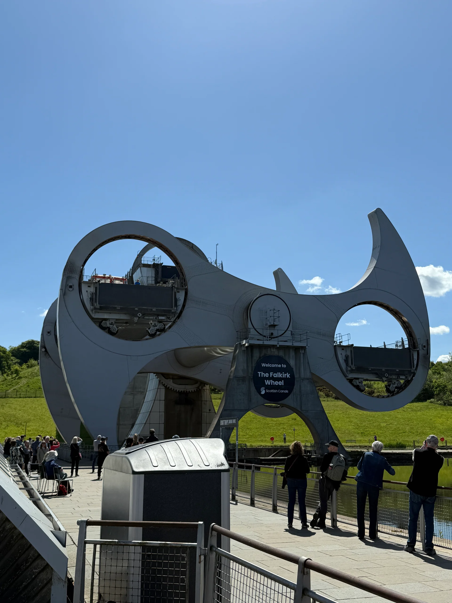
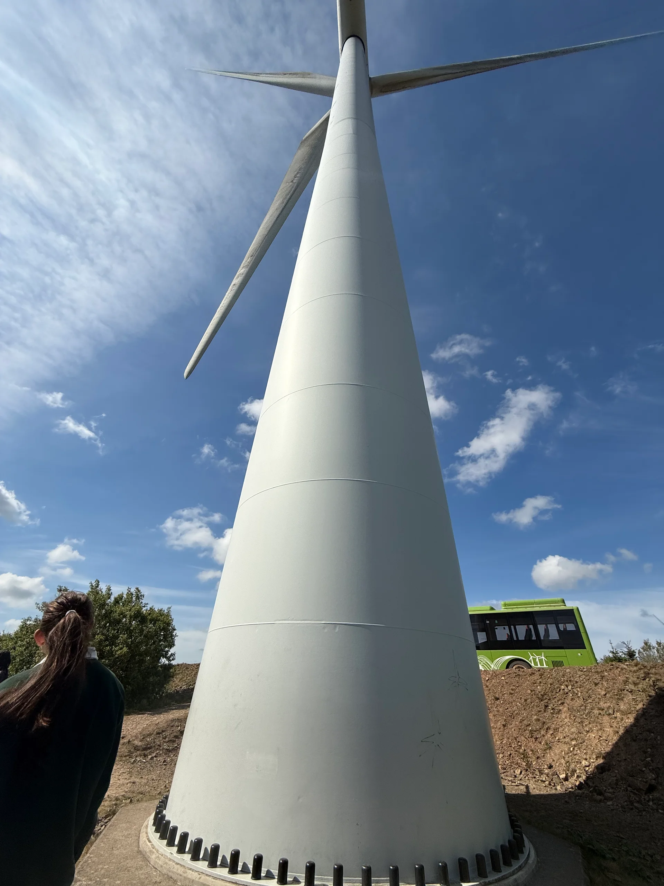
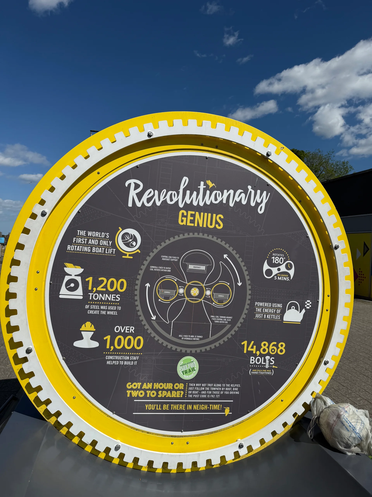
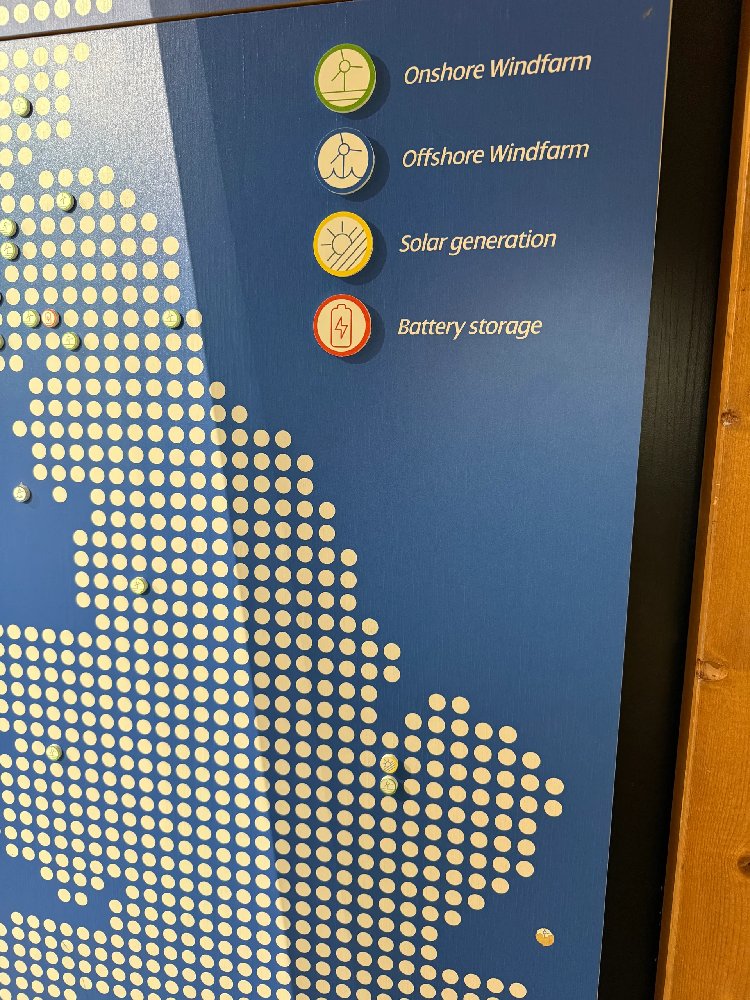
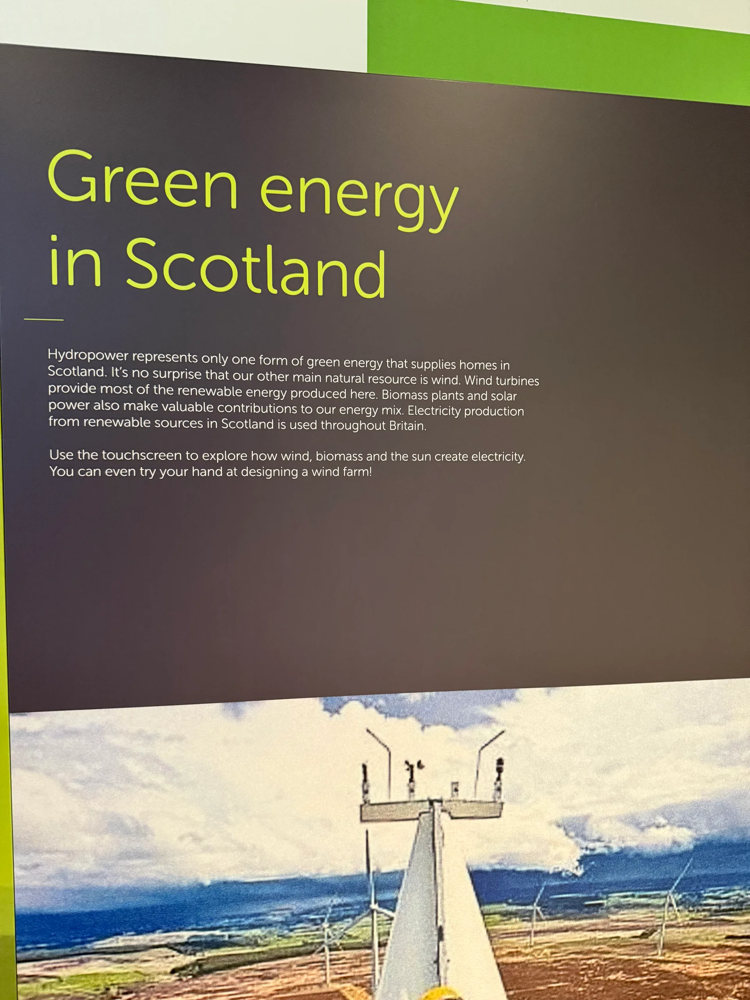
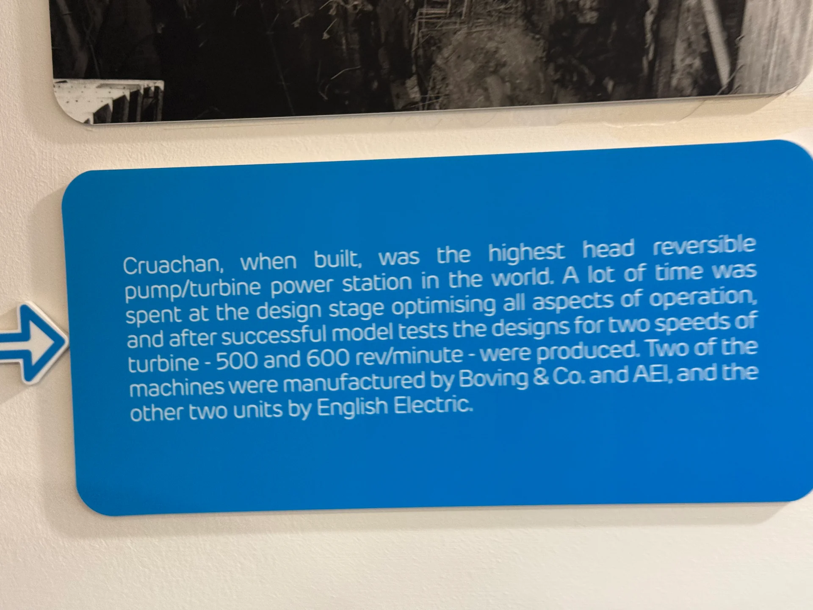
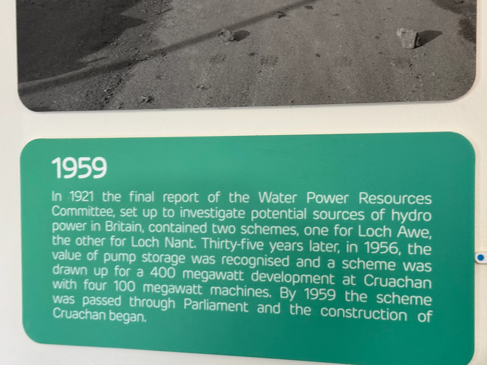
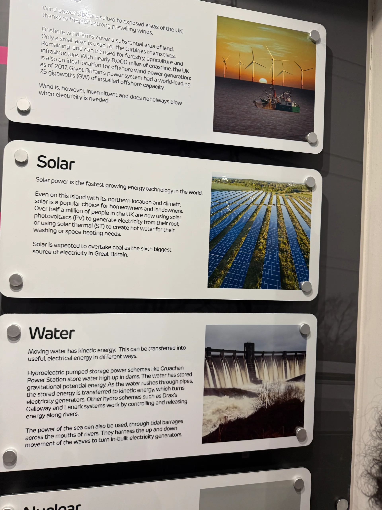

The Falkirk Wheel
Encountering innovative engineering in the infrastructure people use.
Exploring how technology connects people, communities, and the environment—and how engineering can make a meaningful difference.
Explore my experiences
My experiences have shaped how I approach engineering beyond its technical scope.
Through study abroad, interdisciplinary coursework, and hands-on engineering projects, I’ve developed a broader perspective on how technology interacts with different communities, environments, and systems—with a strong focus on sustainability and real-world impact.
Working across disciplines and with diverse groups has strengthened my ability to communicate complex ideas clearly, adapt to new environments, and approach problem-solving with a more holistic mindset.
Seeing engineering at work changed the way I think about what it can do.
My study abroad experience in Scotland was especially formative. Visits to the Falkirk Wheel, Whitelee Wind Farm, and Cruachan Hydro Station highlighted how innovative engineering can support efficient and sustainable infrastructure.
Seeing the Falkirk Wheel, Whitelee Wind Farm, and Cruachan Hydro Station in the same program helped me connect different forms of infrastructure with the places they serve. Each visit gave me a different example to bring back to questions about resources, efficiency, and long-term use. The Management and Sustainability course encouraged me to consider the decisions around the equipment as well as the engineering within it.
The experience also gave me a point of comparison with Ghana and the United States. I could look at an approach to energy in Scotland and ask which parts might translate elsewhere, and which would depend on local resources or priorities. I came away with more questions to investigate in my coursework, especially around renewable generation, energy management, and access.
Encountering innovative engineering in the infrastructure people use.
Connecting clean energy with the landscape and the communities it serves.
Exploring the relationship between engineering, natural resources, and energy.
My experience in Scotland shifted my perspective toward SDG 7 and reinforced the importance of cultural and environmental context in engineering. It’s a perspective I bring to thinking about technology, sustainability, and real-world problem-solving.
Photographs from my Scotland experience.
Select a photograph to see it in full.







